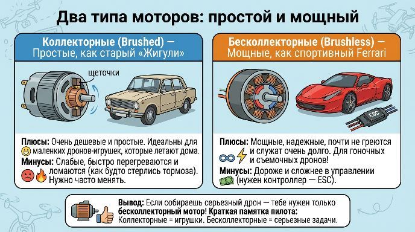
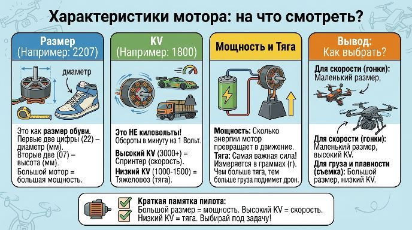

Сердце дрона: как работают моторы и что такое тяга
Привет! Сегодня мы разберемся с самым интересным — моторами. Это как сердце у дрона. Именно они заставляют его взлетать, двигаться и выполнять трюки. Давай узнаем, какие они бывают и как выбрать нужный!
Два типа моторов: простой и мощный
Представь, что моторы — это как машины. Есть простые, как старые «Жигули», а есть современные, как спортивные Ferrari.
✔ Коллекторные моторы (Brushed)
Как работают: Внутри у них есть специальные «щеточки», которые передают ток на вращающуюся часть. Эти щеточки трутся и со временем стираются.
Плюсы: Очень дешевые и простые. Идеальны для маленьких дронов-игрушек, которые летают дома.
Минусы: Они слабые, быстро перегреваются и ломаются (как будто у машины стерлись тормоза). После нескольких полетов их нужно менять.
✔ Бесколлекторные моторы (Brushless)
Как работают: У них нет щеточек! Ток подается на неподвижную часть, а вращается магнит. Это гораздо эффективнее.
Плюсы: Мощные, надежные, почти не греются и служат очень долго. Это двигатели для настоящих дронов — гоночных, съемочных, любых!
Минусы: Они дороже и сложнее в управлении (для них нужен специальный контроллер — ESC).
Вывод: Если ты собираешь серьезный дрон — тебе нужен только бесколлекторный мотор!

Характеристики мотора: на что смотреть?
У каждого мотора есть цифры, например: 2207 1800KV. Давай расшифруем этот секретный код!
✔ Размер (2207): Это как размер обуви
Первые две цифры (22) — это диаметр мотора в миллиметрах. Чем он больше, тем мотор сильнее.
Вторые две цифры (07) — это высота. Вместе они показывают, насколько мотор мощный.
Проще говоря: Большой мотор = большая мощность.
✔ KV (1800):Это НЕ киловольты! Это коэффициент скорости.
Он показывает, сколько оборотов в минуту сделает мотор без пропеллера от одного вольта напряжения.
Высокий KV (3000-5000): Моторы-спринтеры. Они раскручиваются очень быстро, но у них меньше силы. Нужны для маленьких пропеллеров и бешеных скоростей на гоночных дронах.
Низкий KV (100-500): Моторы-тяжеловозы. Они крутятся медленнее, но с огромной силой. Их ставят на большие дроны, которые носят тяжелые камеры или должны долго летать.
✔ Мощность и Тяга:
Мощность — это сколько энергии мотор может превратить в движение.
Тяга — это самая важная сила! Она измеряется в граммах (г) и показывает, с какой силой мотор тянет дрон вверх. Чем больше тяга, тем больше груза может поднять дрон или тем быстрее он взлетит.

Краткая памятка пилота:
✔ Коллекторные — для игрушек, которые не жалко.
✔ Бесколлекторные — для всего серьезного.
✔ Большой размер мотора = больше мощности.
✔ Высокий KV = высокие обороты, для скорости.
✔ Низкий KV = высокая тяга, для грузов и плавного полета.
Подумай, какой мотор ты бы выбрал для дрона-гонщика, а какой для киносъемки?
Навигация по образовательному курсу
Урок 1. Мир дронов: история, виды и правила безопасности
Урок 2. Рама. Варианты исполнения.
Урок 3. Моторы, электродвигатели.
Урок 4. Пропеллеры.
Урок 5. Регулятор оборотов.
Урок 6. Контроллер полета (автопилот).
Урок 7. Приемник-передатчик (ПДУ).
Урок 8. Аккумуляторная батарея (АКБ). Виды и маркировка.
Урок 9. Вспомогательное оборудование.
Для перехода к следующему учебному материалу используйте кнопку «Вперед» в верхней навигации.